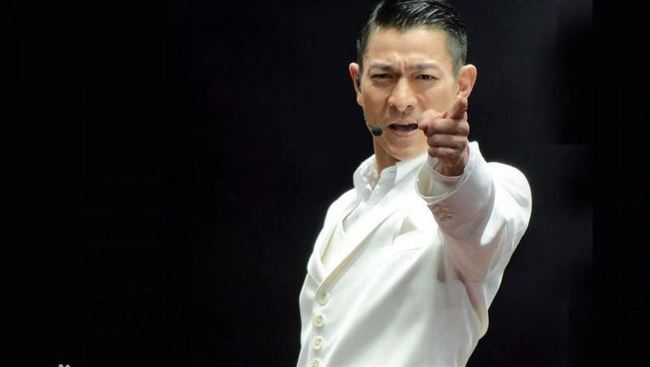

刘德华（Andy Lau），1961年9月27日出生于中国香港，籍贯广东新会，华语影视男演员、歌手、制片人、作词人。
1981年出演电影处女作《彩云曲》。1983年主演的武侠剧《神雕侠侣》在香港取得62点的收视纪录 [1-2] 。1991年创办天幕电影公司 [3] 。2000年凭借警匪片《暗战》获得第19届香港电影金像奖最佳男主角奖 [5]
。2004年凭借剧情片《大块头有大智慧》获得第23届香港电影金像奖最佳男主角奖 [271] ，同年凭借警匪片《无间道3：终极无间》获得第41届台湾电影金马奖最佳男主角奖 [6]
。2005年获得香港UA院线颁发的全港最高累积票房香港男演员奖 [7] 。2006年获得釜山国际电影节亚洲最有贡献电影人奖 [8] 。2012年凭借剧情片《桃姐》获得金马奖、金像奖最佳男主角奖 [9]
；同年担任第49届台湾电影金马奖评审团主席 [10] 。
1985年发行首张个人专辑《只知道此刻爱你》 [11] 。1990年凭借专辑《可不可以》在歌坛获得关注 [12] 。1994年获得十大劲歌金曲最受欢迎男歌星奖。1995年在央视春晚上演唱其代表作《忘情水》 [13]
。2000年被《吉尼斯世界纪录大全》评为获奖最多的香港男歌手 [14] 。2004年第六次获得十大劲歌金曲最受欢迎男歌星奖。2015年第5次登上央视春晚并演唱歌曲《回家的路》 [15]
。2020年发行个人首张数字专辑《演·唱》 [261] 。
演艺事业外，刘德华关心公益慈善。1994年创立刘德华慈善基金会。2000年被评为世界十大杰出青年 [16] 。2005年发起亚洲新星导计划 [17] 。2008年被委任为香港非官守太平绅士 [18]
。2010年获得第12届世界杰出华人奖 [19] 。2016年连任中国残疾人福利基金会副理事长 [16]。

刘德华出生于香港新界，在家中排行老四，幼时随家人搬到了九龙钻石山的木屋区居住，并和姐弟一起帮助家里打理卖稀饭的生意 [20] 。1973年，刘德华随家人搬入香港蓝田邨第15座14楼 [21] 。刘德华从黄大仙天主教小学毕业后升读可立中学 [22] 。在可立中学读书期间，刘德华积极参加校内学校剧社的表演，在老师杜国威的指导下学习戏剧方面的知识。此外，他还参与包括编剧在内的幕后制作。刘德华在中五会考获得1B3D2E（中文读本A）的成绩。中六上学期后，他到香港电视广播有限公司的艺员训练班受训，从而开始了演艺之路 [23] 。
1981年，刘德华考进第10期无线电视艺员训练班 [24] 。同年，出演个人首部电视剧《江湖再见》，在剧中饰演以贩卖妇女为生的小混混阿龙；该剧获得美国电视节电视剧特别奖 [25] 。 刘德华电视剧剧照 刘德华电视剧剧照(11张) 1982年，刘德华以甲级成绩从艺员训练班毕业后正式签约TVB [26] 。同年在喜剧《花艇小英雄》中饰演败家仔钱日添。12月，与叶德娴搭档主演时装警匪剧《猎鹰》，凭借卧底警察江大伟一角获得关注 [27] 。 1983年，主演金庸武侠剧《神雕侠侣》，在剧中饰演外貌俊俏、倜傥不羁的杨过 [28] ；该剧在香港播出后取得62点的收视纪录。同年，与黄日华、梁朝伟、苗侨伟、汤镇业组成“无线五虎将” [29] 。 1984年，与赵雅芝合作主演古装武侠剧《魔域桃源》，在剧中饰演资质出众、武功高强的傅青云 [30] 。同年，与梁朝伟共同主演金庸武侠剧《鹿鼎记》，在剧中饰演英明果断的康熙 [31] 。 1985年，在古装武侠剧《杨家将》中饰演骁勇善战的杨六郎 [32] 。同年，TVB向刘德华提出加签五年的合约，刘德华因拒绝而被TVB雪藏400天 [33-34] 。 1986年，在邵逸夫的调解下，刘德华与TVB和解并签下合约。同年，主演古装剧《真命天子》。1988年，在出演了武侠剧《天狼劫》后，刘德华将演艺事业的重心转向影坛 [34] 1981年，刘德华出演电影处女作《彩云曲》，在片中扮演一个音乐班的学员 [35] 。1982年，在剧情片《投奔怒海》中饰演美军翻译官祖名，并凭借该片获得第2届香港电影金像奖最佳新演员提名 [35] 。 1983年，与朱海玲 [36] 搭档主演剧情片《家在香港》，在片中饰演急功近利的青年人亚伦 [37] 。同年，主演动作片《毁灭号地车》，在片中与一个越南少女演绎了一段爱情故事 [38] 。 1984年，在爱情片《停不了的爱》中饰演富家公子Eric [39] 。1985年，在与叶德娴共同主演的剧情片《法外情》中饰演少年得志的青年律师刘志鹏 [40] 。 1986年，主演科幻冒险片《魔翡翠》，在片中饰演冒险专家猎鹰一号，这也是他首度出演科幻题材的电影 [41] 。同年，出演喜剧片《最佳福星》，在片中饰演身手矫健的特警组警员蓝保 [42] 。1987年，主演警匪片《肝胆相照》，在片中饰演亦正亦邪的犯罪集团成员阿定 [43] 。 1988年，主演王家卫执导的黑帮片《旺角卡门》，在片中饰演重情重义的江湖混混华仔，并凭借该片获得第8届香港电影金像奖最佳男主角奖提名 [44] 。同年，主演警匪片《猎鹰计划》，在片中饰演具有正义感的警员国华 [45] 。此外，他还再度与叶德娴合作，在剧情片《法内情》中与叶德娴饰演绎了一段母子情 [46] 。 1989年，在动作片《至尊无上》中饰演有“亚洲第一快手”之称的陈亚蟹 [47] 。同年，主演剧情片《神行太保》，在片中饰演一名公正、能干、勇敢的太保。此外，他还主演了动作片《人海孤鸿》，在片中饰演没有接受过良好教育的古惑仔沙士 [48] 。12月，与周润发共同主演动作片《赌神》，在片中饰演赌神高进的徒弟刀仔 [49] 。 刘德华 刘德华(11张) 1990年，主演爱情片《天若有情之追梦人》，在片中饰演善良热情、讲义气的黑社会混混华Dee [50] 。同年，主演剧情片《至尊计状元才》。12月，与周星驰合作主演赌片《赌侠》，在片中饰演身怀绝技的陈刀仔 [51] 。 1991年，刘德华开始改变银幕形象，主演了传记题材的系列电影《五亿探长雷洛传》，并在片中首次诠释年龄跨度较大的人物，该系列中的两部作品《五亿探长雷洛传I雷老虎》、《五亿探长雷洛传2:父子情仇》在香港的累积票房达到5300万 [52] 。6月，主演犯罪题材的电影《至尊无上Ⅱ之永霸天下》。此外，他还主演了动作片《九一神雕侠侣》，该片是刘德华投资出品的首部电影作品 [53] 。同年，创办天幕电影公司 [3] 。 1992年，凭借传记片《五亿探长雷洛传》获得第11届香港电影金像奖最佳男主角提名 [54] 。8月，与王祖贤、叶德娴合作出演剧情片《庙街十二少》。11月，与林青霞、叶德娴共同主演古装片《绝代双骄》，在片中饰演聪明绝顶的小鱼儿 [55] 。同年，主演爱情片《九二神雕侠侣之痴心情长剑》，在片中饰演痴情大侠情仁 [56] 。 1993年，在古装片《战神传说》中扮演一个武功超群的渔民 [57] 。同年，主演动作喜剧片《至尊三十六计之偷天换日》，在片中饰演赌术高明的千门高手钱文迪。此外，他还主演了爱情片《天长地久》，在片中塑造了一个风流不羁的江湖浪子形象 [58]...... 了解详情
刘德华的父亲刘礼在启德机场做过消防员的工作。20世纪60年代，刘礼开了一间小吃杂货店以赚钱维持家用。刘德华在家中还有三位姐姐，一位妹妹以及一位弟弟（刘德盛）。
1986年，刘德华随香港明星足球队赴吉隆坡时，结识了朱丽倩。2008年6月23日，刘德华与朱丽倩在美国拉斯维加斯注册结婚 [177] 。2012年5月9日，刘德华的妻子朱丽倩生下一个女儿 [178-179] 。
2006年7月，香港演艺学院第20届毕业典礼上，刘德华获颁香港演艺学院荣誉院士 [181] 。2017年12月14日，刘德华获香港树仁大学颁予荣誉文学博士 [180] 。
公益事业 刘德华参加公益活动 刘德华参加公益活动(4张) 1991年，华东地区发生水灾，刘德华向灾区捐款500万 [199] 。1994年，成立刘德华慈善基金会，帮助贫困儿童以及伤残人士 [200] 。 1999年9月24日，参加“伸出你的手，九二一震灾捐款”晚会，通过与梅艳芳、张学友合唱歌曲《月亮代表我的心》筹得3000万元的善款 [199] 。 2001年，将上海演唱会的150万元演出收入捐献给艺术节组委会；同年，内蒙古自治区遭受雪灾，刘德华将筹得的2000件天蚕衣（约合40万元）捐给灾区。 2004年，刘德华向印度洋海啸灾区捐款30万元；同年，为仁济医院筹得善款480万元 [199] 。2005年，参加由中国香港演艺界发起爱心无国界汇演 [201] ，并捐款1200万。 2006年6月6日，刘德华参加全港学童护眼大行动，并捐款10万；同年，投资2500万筹建“亚洲新星导”计划 [17] 。 2008年5月13日，刘德华向汶川地震灾区捐款10万元；之后发起的抗震救灾关爱行动筹款近3900万港币，并亲自填词《承诺》作为赈灾歌曲。6月3日，在海南三亚“爱心呵护阳光行动”中，刘德华义拍奥运火炬，并将拍得的190万元人民币全部用于四川地震灾区教育事业。此外，他还出资75万元买下赵宇瑛捐卖的火炬 [202] 。 2009年台湾发生八八水灾，刘德华与众艺人共同发起募款赈灾晚会。2010年4月，刘德华参加的“抗旱救灾-我们在行动”赈灾晚会筹募2.8亿元善款，刘德华个人捐款20万元 [203] 。同月，玉树发生地震，刘德华在发布短文后参加“情系玉树-关爱行动”赈灾义演，赈灾现场为灾区筹得捐款3506万港元。 2011年4月1日晚，参加由香港演艺人协会发起的“爱心无国界311烛光晚会”筹款活动 [204] 。2015年，拍摄以“春运回家”为主题的公益广告 [205] 。 奥运活动 刘德华 刘德华(6张) 2007年，在北京奥运会倒计时一周年时，刘德华推出了为北京残奥会创作的歌曲《Everyone Is No.1》。 2008年，刘德华成为奥运会圣火在香港传递的第四棒火炬手，也是首棒艺人火炬手。8月8日，在散场期间刘德华与周华健、容祖儿等共同演唱奥运歌曲《为生命喝彩》。9月6日，参加北京残奥会开幕式前的文艺表演，并演唱歌曲《Everyone Is No.1》；在北京残奥会开幕后，他与韩红合唱北京残奥会主题歌《和梦一起飞》 [206] 。 2014年10月18日，参加2014亚洲残疾人运动会开幕礼 [207] 。10月18至22日，参加在韩国仁川举行的亚残运会开幕式 [208] 。 社会职务 2010年4月，担任中国残疾人福利基金会理事、副理事长 [209] 。2011年6月14日，刘德华当选中国残疾人福利基金会第三届理事会副理事长 [210] 。